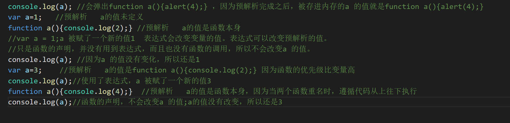

预解析指的就是，在js文件或者script里面的代码在正式开始执行之前，进行的一些解析工作。这个工作很简单，就是在全局中寻找var关键字声明的变量和通过function关键字声明的函数。
1.寻找 var function 参数 等关键字，根据var a提前设置为 a=未定义（undefined） ，所有的变量，在正式运行前都提前赋值了一个未定义。
2.函数在正式运行代码前，都是整个函数块。fn1=function fn1(){alert(2);}
执行js代码一般分两步：1.预解析代码。 2.逐行执行代码。
var a = 1;
var b;//
c = 3;//
function d(){//用声明的方式声明的函数
console.log('hello');
}
var e = function(){//函数表达式
console.log('world');
}
强调：1、预处理的函数必须是JS中用声明的方式声明的函数（不是函数表达式）
当变量和函数重名时：就只留下函数的值，不管顺序谁前谁后。所以函数的优先级比变量高。注意：这只是预解析。
当函数和函数重名时：会留下后面那个，会遵循上下文机制。
下面举例说明一下预解析：
var fn=456;
function fn(){
console.log('123')
}
在上述的代码中我们预解析后会变成：
var fn; //fn的值未定义
//fn的值是函数本身 也就是functionfn(){console.log('123')}
function fn(){
console.log('123')
}
fn=456; //代码逐行执行 fn被赋了一个新的值456

作用域在JS中同样也是一个重要的概念。它不复杂，因为ES5中只有全局作用域和函数作用域，我们都知道他没有块级作用域。但在ES6中多了一个let，他可以保证外层块不受内层块的影响。即内层块形成了一个块级作用域，这是let的一个特点。它不简单，因为在许多的函数嵌套的情景下，只有对它理解深刻，才能更好的去分析。今天我们着重讲的是函数作用域与全局作用域。
var a=1;
function f1(){
var b=2;
}
}
作用域是在一个函数创建时就已经形成的，而不是调用时
var a=1;
function fn1(){
console.log(a)
};
fn1()
第二种
function fn1(){
var a=1;
};
fn1();
console.log(a);
第三种
var a=1;
function fn1(){
console.log(a)
a = 2;
};
fn1();
console.log(a);
第四种
var a=1;
function fn1(){
console.log(a)
var a = 2;
};
fn1();
console.log(a);
1.全局变量和它的作用域
全局变量是指在程序开头的说明部分定义和说明的量。它的作用域分为两种情况：
(1)在全局变量和局部变量不同名时，其作用域是整个程序。
(2)在全局变量和局部变量同名时，全局变量的作用域不包含同名局部变量的作用域。
面试题一
var a = 10;
function f1(){
var b = 2 * a;
var a = 20;
var c = a+1;
console.log(b);
console.log(c);
}
f1()